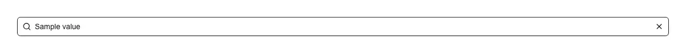

Search field with a leading magnifier icon and a trailing clear (✕) button that appears as soon as there is text, empties the field, and puts focus back so typing can continue. Use it above filterable lists and data tables, in sidebars and settings pages, over dropdown and combobox options, for docs and help search, for admin record lookup, and anywhere a "/" shortcut focuses a search box. Common asks it answers: "search input", "search bar", "search box", "filter input", "clearable input", "input with a clear button", "search field with icon", "type to filter a list", "table search box", "searchbar component". shadcn/ui has no search field: its input is a bare styled <input>, and its input-group is a layout kit of six parts (InputGroup, InputGroupAddon, InputGroupButton, InputGroupText, InputGroupInput, InputGroupTextarea) that pulls in button, input and textarea and hands you slots to hang your own icon and clear control in — you still write the clear button, the show-it-only-when-there-is-text rule, the refocus, and the event plumbing. This is that already assembled, in one import. The part that is easy to get wrong is clearing. Assigning to the input's value does not make React's onChange fire, so a hand-rolled clear button empties the box while the list behind it stays filtered on the old query. This writes through the native value setter and dispatches a bubbling input event, so onChange fires for controlled and uncontrolled usage alike and whatever filtering it drives actually updates. It also hides the WebKit search-cancel button so there is not a second ✕ beside the first, keeps the icon out of the accessibility tree and out of pointer events, gives the clear control a screen-reader label, and passes only one of value/defaultValue through so React never warns about a field switching between controlled and uncontrolled. The clear button is deliberately left out of the tab order, so Tab moves on to the next field instead of into a control that duplicates select-all-and-delete. Standard input props and a forwarded ref pass straight through, so a "/" hotkey can focus it. Theme-aware via shadcn tokens; depends only on lucide-react.

Rendered on the shadcn default neutral palette with harness-generated props.
pnpm dlx shadcn@4.21.0 add @pulld/search-input
| licence | POINTER |
|---|---|
| primitive base | none |
| type | registry:ui |
| files | src/components/ui/search-input.tsx |
| npm deps pulled | none beyond the pre-installed peer set |
| registry deps | — |
| semantic / palette / hex | 7 / 0 / 0 |
| writes shared ui/ | yes — can overwrite the project’s own primitives |